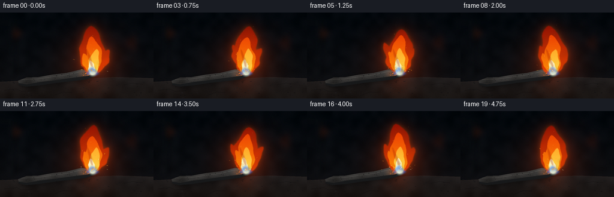
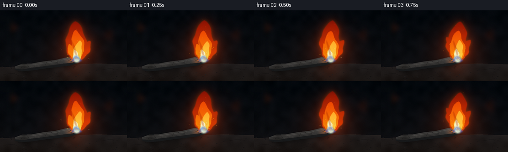

CODING AGENTS AS PIXEL WORLD MODELS
traex/GPT-5.6-Sol · material_0010
点击播放 · 原生 RGB 像素
此结果可播放，但该运行尚未通过最终提交审核。页面展示不代表评测通过。
逐轮保存的候选
回放视频、检查图与代码变化。
每份候选均可单独播放。实际图片检查记录在下方工具轨迹中。
候选 01播放与检查图
点击播放 · 原生 RGB 像素


展开代码变化
--- 上一保存版本
+++ 本次保存版本
@@ -0,0 +1,365 @@
+from pathlib import Path
+import math
+import numpy as np
+from PIL import Image, ImageDraw, ImageFilter
+import artifact_io
+
+# Procedural, deterministic text-to-video render.
+W, H, N, FPS = 256, 144, 20, 4.0
+S = 3
+WW, HH = W*S, H*S
+RNG = np.random.default_rng(73191)
+
+
+def sc(v):
+ return int(round(v*S))
+
+
+def pts(seq):
+ return [(sc(x), sc(y)) for x, y in seq]
+
+
+def mask_new():
+ return Image.new("L", (WW, HH), 0)
+
+
+def blend(rgb, layer, alpha):
+ """Alpha composite a solid or RGB layer over float RGB."""
+ a = np.asarray(alpha, dtype=np.float32) / 255.0 if isinstance(alpha, Image.Image) else np.asarray(alpha, dtype=np.float32)
+ if a.ndim == 2:
+ a = a[..., None]
+ c = np.asarray(layer, dtype=np.float32)
+ if c.ndim == 1:
+ c = c[None, None, :]
+ return rgb * (1.0 - a) + c * a
+
+
+def radial(cx, cy, radius, power=2.0):
+ yy, xx = np.mgrid[0:HH, 0:WW]
+ d = np.sqrt((xx/S-cx)**2 + (yy/S-cy)**2) / radius
+ return np.clip(1.0-d, 0, 1) ** power
+
+
+def smooth_noise(seed, size=(WW, HH), coarse=(36, 22), blur=1.1):
+ r = np.random.default_rng(seed)
+ a = (r.random((coarse[1], coarse[0]))*255).astype(np.uint8)
+ im = Image.fromarray(a, 'L').resize(size, Image.Resampling.BICUBIC)
+ if blur:
+ im = im.filter(ImageFilter.GaussianBlur(sc(blur)))
+ return np.asarray(im, dtype=np.float32)/255.0
+
+
+# Static texture fields and scene ornaments.
+noise_bg = smooth_noise(100, coarse=(24, 14), blur=1.8)
+noise_fine = RNG.random((HH, WW), dtype=np.float32)
+
+def make_background():
+ yy, xx = np.mgrid[0:HH, 0:WW]
+ xn, yn = xx/WW, yy/HH
+ # Near-black blue forge interior, lighter toward the work area.
+ top = np.array([2.0, 6.0, 10.0])
+ bottom = np.array([13.0, 13.0, 15.0])
+ bg = top[None,None,:]*(1-yn[...,None]) + bottom[None,None,:]*yn[...,None]
+ bg += (noise_bg[...,None]-0.5)*np.array([5.0, 5.0, 6.0])
+ # faint furnace warmth localized behind the burning iron
+ amb = radial(155, 89, 102, 1.7)[...,None]
+ bg += amb*np.array([32.0, 8.0, 0.5])
+ # vignette
+ d = ((xn-.5)/.73)**2 + ((yn-.52)/.88)**2
+ bg *= np.clip(1.08-.34*d, .53, 1)[...,None]
+ im = Image.fromarray(np.uint8(np.clip(bg,0,255)), 'RGB')
+ # Indistinct vertical forge architecture and warm bokeh, all defocused.
+ shapes = Image.new('RGBA', (WW,HH), (0,0,0,0)); dsh = ImageDraw.Draw(shapes)
+ dsh.rectangle((sc(12),sc(5),sc(19),sc(111)), fill=(16,24,30,50))
+ dsh.rectangle((sc(22),sc(6),sc(25),sc(109)), fill=(0,0,0,100))
+ dsh.rectangle((sc(223),sc(0),sc(230),sc(108)), fill=(18,22,24,40))
+ for x,y,r,c in [(31,35,8,(255,79,12,25)),(218,51,12,(227,54,6,18)),(202,20,4,(255,151,37,25)),(76,38,3,(255,116,20,17))]:
+ dsh.ellipse((sc(x-r),sc(y-r),sc(x+r),sc(y+r)), fill=c)
+ shapes = shapes.filter(ImageFilter.GaussianBlur(sc(5.5)))
+ im = Image.alpha_composite(im.convert('RGBA'), shapes).convert('RGB')
+ return np.asarray(im, dtype=np.float32)
+
+BASE_BG = make_background()
+
+# Surface texture marks are fixed to camera.
+surface_pits = []
+for _ in range(115):
+ x = RNG.uniform(-4,260); y = RNG.uniform(112,148)
+ rx = RNG.uniform(.25,1.7); ry = RNG.uniform(.15,.7)
+ val = int(RNG.integers(7,27))
+ surface_pits.append((x,y,rx,ry,val))
+
+iron_pits = []
+for _ in range(48):
+ x = RNG.uniform(39,151)
+ center_y = 117 - .145*(x-35)
+ y = center_y + RNG.uniform(-3.5,3.8)
+ r = RNG.uniform(.18,.85)
+ iron_pits.append((x,y,r,RNG.random()))
+
+# Repeatable spark emitters; modulo periods maintain steady activity.
+sparks = []
+for i in range(62):
+ period = RNG.uniform(1.15,3.0)
+ phase = RNG.uniform(0,period)
+ life = RNG.uniform(.38,1.02)
+ ang = RNG.uniform(-2.75,-.32) # mostly upward, broad fan
+ speed = RNG.uniform(18,62)
+ vx, vy = math.cos(ang)*speed, math.sin(ang)*speed
+ sparks.append(dict(period=period, phase=phase, life=life, vx=vx, vy=vy,
+ size=RNG.uniform(.25,.75), hue=RNG.uniform(0,1), jitter=RNG.uniform(0,6.28)))
+
+
+def draw_surface(arr, t):
+ # slanted refractory/anvil surface
+ m = mask_new(); d = ImageDraw.Draw(m)
+ d.polygon(pts([(0,116),(55,113),(124,111),(195,108),(256,110),(256,144),(0,144)]), fill=255)
+ yy, xx = np.mgrid[0:HH,0:WW]
+ yn = yy/S
+ tex = np.zeros((HH,WW,3),np.float32)
+ shade = np.clip((yn-108)/36,0,1)
+ for k,(a,b) in enumerate([(28,8),(25,9),(25,11)]): tex[...,k] = a-b*shade
+ tex += (noise_bg[...,None]-.5)*8 + (noise_fine[...,None]-.5)*2.5
+ # reflected fire on the upper surface
+ refl = radial(154,114,66,2.2)[...,None]
+ tex += refl*np.array([32.,7.,0.])
+ arr = blend(arr, tex, m)
+ details = Image.new('RGBA',(WW,HH),(0,0,0,0)); dd=ImageDraw.Draw(details)
+ dd.line(pts([(0,116),(65,113),(128,111),(194,108),(256,110)]), fill=(78,55,41,80), width=sc(.7))
+ for x,y,rx,ry,val in surface_pits:
+ dd.ellipse((sc(x-rx),sc(y-ry),sc(x+rx),sc(y+ry)), fill=(val,val,val+2,int(80+val*3)))
+ # a few hairline cracks
+ for line in [[(7,130),(28,128),(36,132),(54,131)],[(206,121),(221,118),(238,120)],[(91,138),(105,133),(120,134)]]:
+ dd.line(pts(line), fill=(3,3,4,145), width=sc(.45))
+ arr = blend(arr, np.asarray(details)[...,:3], np.asarray(details)[...,3]/255.)
+ return arr
+
+
+def tongue_mask(base, tip, width, phase, kind=0):
+ """Tapered, asymmetric, coherent flame tongue."""
+ bx,by=base; tx,ty=tip
+ n=42
+ left=[]; right=[]
+ dx,dy=tx-bx,ty-by; L=max(1,math.hypot(dx,dy)); nx,ny=-dy/L,dx/L
+ for i in range(n):
+ u=i/(n-1)
+ # curved centerline with time-coherent curl concentrated near the tip
+ curl = math.sin(phase + u*5.1 + kind*1.7) * width*.18*u
+ curl += math.sin(phase*.47 + u*9.0 + kind)*width*.07*u*(1-u)
+ cx=bx+dx*u + nx*curl
+ cy=by+dy*u + ny*curl
+ env=(math.sin(math.pi*u)**.55)*(1-.24*u)
+ env += .18*(1-u)
+ w=width*env*(1 + .08*math.sin(u*15.5 + phase*1.3 + kind))
+ if i==n-1: w=.35
+ asym=.10*math.sin(phase*.8+u*8+kind)
+ left.append((cx+nx*w*(1+asym),cy+ny*w*(1+asym)))
+ right.append((cx-nx*w*(1-asym),cy-ny*w*(1-asym)))
+ m=mask_new(); ImageDraw.Draw(m).polygon(pts(left+right[::-1]),fill=255)
+ return m
+
+
+def max_masks(*masks):
+ out=np.zeros((HH,WW),np.uint8)
+ for m in masks: out=np.maximum(out,np.asarray(m,dtype=np.uint8))
+ return Image.fromarray(out,'L')
+
+
+def render_flame_masks(t):
+ # Main flame breathes subtly rather than changing size abruptly.
+ ph=2*math.pi*t/2.35
+ sway=4.5*math.sin(ph)+1.4*math.sin(ph*2.17+.8)
+ h=79 + 4*math.sin(ph*1.21+.4)
+ main=tongue_mask((154,103),(154+sway,103-h),20.5,ph,0)
+ left=tongue_mask((151,100),(132+2.5*math.sin(ph+.7),53+3*math.sin(ph*1.4)),8.3,ph+1.2,1)
+ right=tongue_mask((158,98),(179+4*math.sin(ph*.8+1.3),61+2*math.cos(ph)),9.0,ph+2.0,2)
+ outer=max_masks(main,left,right).filter(ImageFilter.GaussianBlur(sc(.55)))
+
+ mid=tongue_mask((154.5,103),(154+sway*.68,39+3*math.sin(ph+.3)),13.7,ph+.35,3)
+ mid2=tongue_mask((151,99),(138+2*math.sin(ph),67+2*math.cos(ph)),6.5,ph+2.1,4)
+ mid=max_masks(mid,mid2).filter(ImageFilter.GaussianBlur(sc(.43)))
+
+ inner=tongue_mask((154,104),(158+2.6*math.sin(ph+.8),61+2*math.sin(ph*1.7)),8.4,ph+.8,5)
+ inner=inner.filter(ImageFilter.GaussianBlur(sc(.38)))
+ core=tongue_mask((154,104),(151+1.6*math.sin(ph*1.2),79+1.3*math.cos(ph)),5.3,ph+1.5,6)
+ core=core.filter(ImageFilter.GaussianBlur(sc(.32)))
+ return outer,mid,inner,core
+
+
+def flame_gradient(top, bottom):
+ yy=np.arange(HH,dtype=np.float32)[:,None]/S
+ q=np.clip((yy-20)/90,0,1)[...,None]
+ c=np.array(top,np.float32)[None,None,:]*(1-q)+np.array(bottom,np.float32)[None,None,:]*q
+ return np.broadcast_to(c,(HH,WW,3))
+
+
+def render_smoke(arr,t):
+ # Very subtle smoke lobes trailing off the hot tip, behind the flame.
+ im=Image.new('RGBA',(WW,HH),(0,0,0,0)); d=ImageDraw.Draw(im)
+ for i in range(5):
+ y=52-i*12
+ x=157 + 6*math.sin(t*.85+i*1.4) + i*1.2
+ rx=7+i*2.2; ry=10+i*2.3
+ d.ellipse((sc(x-rx),sc(y-ry),sc(x+rx),sc(y+ry)),fill=(58,62,65,10-i))
+ im=im.filter(ImageFilter.GaussianBlur(sc(8)))
+ return blend(arr,np.asarray(im)[...,:3],np.asarray(im)[...,3]/255.)
+
+
+def draw_iron(arr,t):
+ # shadow under the iron
+ sh=mask_new(); ds=ImageDraw.Draw(sh)
+ ds.polygon(pts([(29,119),(50,111),(145,98),(164,104),(151,113),(49,128)]),fill=160)
+ sh=sh.filter(ImageFilter.GaussianBlur(sc(4)))
+ arr=blend(arr,(0,0,0),np.asarray(sh)/255*.72)
+
+ # Lower bevel/side, then top hammered face.
+ side=mask_new(); d=ImageDraw.Draw(side)
+ d.polygon(pts([(31,115),(44,111),(66,110),(92,106),(119,102),(145,97),(158,100),(157,107),(143,112),(118,115),(92,118),(65,122),(43,124),(31,121)]),fill=255)
+ yy,xx=np.mgrid[0:HH,0:WW]
+ sidec=np.zeros((HH,WW,3),np.float32)
+ sidec[:]=[22,23,24]
+ sidec += np.clip((112-yy/S),-5,8)[...,None]*np.array([.35,.32,.30])
+ arr=blend(arr,sidec,side)
+
+ topm=mask_new(); d=ImageDraw.Draw(topm)
+ top_poly=[(30,114),(44,108.5),(64,108),(88,103.8),(111,101),(136,95),(151,96.8),(158,101),(146,106),(121,109),(94,112.5),(67,116),(44,120),(31,118)]
+ d.polygon(pts(top_poly),fill=255)
+ xlog=xx/S; ylog=yy/S
+ metal=np.zeros((HH,WW,3),np.float32)
+ # directional metallic gradient and forge glow at the right tip
+ light=41 + 15*np.clip((112-ylog)/12,0,1) + 5*np.sin(xlog*.10)
+ metal[...,0]=light*1.03; metal[...,1]=light; metal[...,2]=light*.97
+ metal += (noise_bg[...,None]-.5)*16 + (noise_fine[...,None]-.5)*5
+ hot=np.clip((xlog-127)/31,0,1)**1.45 * np.clip(1-np.abs(ylog-(105-.14*(xlog-120)))/13,0,1)
+ pulse=.94+.06*math.sin(t*5.2)
+ metal += hot[...,None]*pulse*np.array([190,64,5])
+ arr=blend(arr,metal,topm)
+
+ detail=Image.new('RGBA',(WW,HH),(0,0,0,0)); dd=ImageDraw.Draw(detail)
+ # hammered ridge catches a cool highlight
+ dd.line(pts([(36,112),(63,111),(89,107),(112,104),(137,98),(150,99)]),fill=(151,147,139,95),width=sc(.7))
+ dd.line(pts([(34,118),(67,115),(95,111),(121,107)]),fill=(9,10,11,120),width=sc(.65))
+ for x,y,r,v in iron_pits:
+ if v<.62:
+ dd.ellipse((sc(x-r),sc(y-r*.55),sc(x+r),sc(y+r*.55)),fill=(6,7,7,int(90+v*90)))
+ else:
+ dd.point((sc(x),sc(y)),fill=(150,128,103,100))
+ # incandescent scale flecks close to the burning edge
+ for x,y,r in [(143,102,1.0),(149,100,1.3),(153,102,1.5),(139,105,.55),(147,105,.7),(155,100,.7)]:
+ a=int(175+55*math.sin(t*4.3+x)**2)
+ dd.ellipse((sc(x-r),sc(y-r*.6),sc(x+r),sc(y+r*.6)),fill=(255,111,12,a))
+ arr=blend(arr,np.asarray(detail)[...,:3],np.asarray(detail)[...,3]/255.)
+ return arr
+
+
+def draw_sparks(arr,t):
+ # A separate additive-looking RGBA layer plus a blurred halo.
+ sharp=Image.new('RGBA',(WW,HH),(0,0,0,0)); ds=ImageDraw.Draw(sharp)
+ glow=Image.new('RGBA',(WW,HH),(0,0,0,0)); dg=ImageDraw.Draw(glow)
+ g=29.0
+ active=0
+ for p in sparks:
+ age=(t+p['phase'])%p['period']
+ if age>=p['life']: continue
+ active+=1
+ # emission point trembles at the oxide edge
+ x0=155+1.8*math.sin(p['jitter']+t*4)
+ y0=99+1.0*math.cos(p['jitter']*.7+t*3)
+ x=x0+p['vx']*age + 1.4*math.sin(age*11+p['jitter'])
+ y=y0+p['vy']*age+.5*g*age*age
+ if not (-3<x<259 and -3<y<147): continue
+ dt=.035 + p['size']*.025
+ xp=x0+p['vx']*max(age-dt,0)+1.4*math.sin(max(age-dt,0)*11+p['jitter'])
+ yp=y0+p['vy']*max(age-dt,0)+.5*g*max(age-dt,0)**2
+ fade=np.clip(1-age/p['life'],0,1)
+ if p['hue']>.72: col=(255,245,177,int(180+75*fade))
+ else: col=(255,135+int(65*p['hue']),25,int(150+100*fade))
+ width=max(1,sc(p['size']))
+ ds.line(pts([(xp,yp),(x,y)]),fill=col,width=width)
+ rr=p['size']*2.7
+ dg.ellipse((sc(x-rr),sc(y-rr),sc(x+rr),sc(y+rr)),fill=(255,79,4,int(90*fade)))
+ glow=glow.filter(ImageFilter.GaussianBlur(sc(2.1)))
+ arr=blend(arr,np.asarray(glow)[...,:3],np.asarray(glow)[...,3]/255.)
+ arr=blend(arr,np.asarray(sharp)[...,:3],np.asarray(sharp)[...,3]/255.)
+ return arr
+
+
+def render_frame(index):
+ t=index/FPS
+ arr=BASE_BG.copy()
+ # breathing fire illumination over the scene (gentle and steady)
+ pulse=.94+.06*math.sin(2*math.pi*t/1.75)
+ illum=radial(154,91,77,1.85)[...,None]
+ arr += illum*np.array([31.,7.0,.2])*pulse
+ arr=draw_surface(arr,t)
+ arr=render_smoke(arr,t)
+
+ outer,mid,inner,core=render_flame_masks(t)
+ # large soft glow behind both iron and flame
+ glow=outer.filter(ImageFilter.GaussianBlur(sc(11)))
+ arr=blend(arr,(255,48,1),np.asarray(glow)/255*.30)
+ near=outer.filter(ImageFilter.GaussianBlur(sc(3.8)))
+ arr=blend(arr,(255,90,4),np.asarray(near)/255*.28)
+
+ # iron occupies and occludes the lowest halo, while flame overlays its hot edge
+ arr=draw_iron(arr,t)
+
+ # Layered emission: crimson perimeter, amber body, pale core.
+ om=np.asarray(outer,dtype=np.float32)/255
+ mm=np.asarray(mid,dtype=np.float32)/255
+ im=np.asarray(inner,dtype=np.float32)/255
+ cm=np.asarray(core,dtype=np.float32)/255
+ # Turbulence creates lively internal translucency while preserving coherent silhouettes.
+ yy,xx=np.mgrid[0:HH,0:WW]
+ turb=.91+.09*np.sin(xx/S*.16 + yy/S*.21 - t*6.2)*np.sin(yy/S*.10+t*3.7)
+ arr=blend(arr,flame_gradient((142,12,1),(255,68,1)),np.clip(om*turb*.90,0,1))
+ arr=blend(arr,flame_gradient((241,42,0),(255,154,7)),np.clip(mm*.91,0,1))
+ arr=blend(arr,flame_gradient((255,118,3),(255,228,76)),np.clip(im*.95,0,1))
+ arr=blend(arr,flame_gradient((255,229,105),(255,255,221)),np.clip(cm*.97,0,1))
+
+ # Electric cobalt seam at the base: a characteristic metal-burning flame.
+ blue=mask_new(); db=ImageDraw.Draw(blue)
+ ph=2*math.pi*t/2.35
+ db.polygon(pts([(144,103),(147,96),(153,91+math.sin(ph)),(158,94),(165,102),(159,105),(151,104)]),fill=185)
+ blue=blue.filter(ImageFilter.GaussianBlur(sc(1.25)))
+ arr=blend(arr,(31,115,255),np.asarray(blue)/255*.76)
+ white=mask_new(); dw=ImageDraw.Draw(white)
+ dw.ellipse((sc(149),sc(98),sc(160),sc(106)),fill=190)
+ white=white.filter(ImageFilter.GaussianBlur(sc(1.5)))
+ arr=blend(arr,(255,249,196),np.asarray(white)/255*.9)
+
+ # slim darker orange cleft adds depth and a recognizable forked flame shape
+ cleft=tongue_mask((154,91),(144+2*math.sin(ph),61),2.25,ph+2.7,8)
+ cleft=cleft.filter(ImageFilter.GaussianBlur(sc(.5)))
+ arr=blend(arr,(154,20,0),np.asarray(cleft)/255*.32)
+
+ arr=draw_sparks(arr,t)
+
+ # Fine incandescent particles rising almost vertically.
+ dust=Image.new('RGBA',(WW,HH),(0,0,0,0)); dd=ImageDraw.Draw(dust)
+ for j in range(12):
+ p=(t*.22+j/12)%1
+ y=99-p*91
+ x=156+11*math.sin(j*2.4+p*8.2)+3*math.sin(t+j)
+ a=int(100*(1-p))
+ r=.28+.18*(j%3)
+ dd.ellipse((sc(x-r),sc(y-r),sc(x+r),sc(y+r)),fill=(255,157,43,a))
+ arr=blend(arr,np.asarray(dust)[...,:3],np.asarray(dust)[...,3]/255.)
+
+ # Cinematic contrast and restrained film grain.
+ arr=np.clip(arr,0,255)
+ arr=(arr/255.0)**.94*255.0
+ grain=np.random.default_rng(9000+index).normal(0,1.05,(HH,WW,1))
+ arr=np.clip(arr+grain,0,255).astype(np.uint8)
+ # downsample from 3x for antialiasing and soft cinematic integration
+ out=Image.fromarray(arr,'RGB').resize((W,H),Image.Resampling.LANCZOS)
+ return np.asarray(out,dtype=np.uint8)
+
+
+def main():
+ frames=np.stack([render_frame(i) for i in range(N)],axis=0)
+ artifact_io.save(frames,Path(__file__).resolve().parent)
+ print('saved',frames.shape,frames.dtype,'range',int(frames.min()),int(frames.max()))
+
+if __name__=='__main__':
+ main()
可观测工具轨迹
实际执行的命令与返回图片。
命令 1exit 0
/bin/bash -lc "cat prompt.txt && printf '\\n--- GENERATION_RULES.md ---\\n' && cat GENERATION_RULES.md && printf '\\n--- task_spec.json ---\\n' && cat task_spec.json"
命令 2exit 0
/bin/bash -lc "printf '%s\\n' '--- files ---'; find . -maxdepth 3 -type f -printf '%p\\n' | sort; printf '%s\\n' '--- commands ---'; command -v ffmpeg || true; command -v python3 || true; command -v blender || true; command -v convert || true"
命令 3exit 0
/bin/bash -lc 'cat artifact_io.py'
命令 4exit 2
/bin/bash -lc "cat > generate.py <<'PY'
from pathlib import Path
import math
import numpy as np
from PIL import Image, ImageDraw, ImageFilter
import artifact_io
# Procedural, deterministic text-to-video render.
W, H, N, FPS = 256, 144, 20, 4.0
S = 3
WW, HH = W*S, H*S
RNG = np.random.default_rng(73191)
def sc(v):
return int(round(v*S))
def pts(seq):
return [(sc(x), sc(y)) for x, y in seq]
def mask_new():
return Image.new(\"L\", (WW, HH), 0)
def blend(rgb, layer, alpha):
\"\"\"Alpha composite a solid or RGB layer over float RGB.\"\"\"
a = np.asarray(alpha, dtype=np.float32) / 255.0 if isinstance(alpha, Image.Image) else np.asarray(alpha, dtype=np.float32)
if a.ndim == 2:
a = a[..., None]
c = np.asarray(layer, dtype=np.float32)
if c.ndim == 1:
c = c[None, None, :]
return rgb * (1.0 - a) + c * a
def radial(cx, cy, radius, power=2.0):
yy, xx = np.mgrid[0:HH, 0:WW]
d = np.sqrt((xx/S-cx)**2 + (yy/S-cy)**2) / radius
return np.clip(1.0-d, 0, 1) ** power
def smooth_noise(seed, size=(WW, HH), coarse=(36, 22), blur=1.1):
r = np.random.default_rng(seed)
a = (r.random((coarse[1], coarse[0]))*255).astype(np.uint8)
im = Image.fromarray(a, 'L').resize(size, Image.Resampling.BICUBIC)
if blur:
im = im.filter(ImageFilter.GaussianBlur(sc(blur)))
return np.asarray(im, dtype=np.float32)/255.0
# Static texture fields and scene ornaments.
noise_bg = smooth_noise(100, coarse=(24, 14), blur=1.8)
noise_fine = RNG.random((HH, WW), dtype=np.float32)
def make_background():
yy, xx = np.mgrid[0:HH, 0:WW]
xn, yn = xx/WW, yy/HH
# Near-black blue forge interior, lighter toward the work area.
top = np.array([2.0, 6.0, 10.0])
bottom = np.array([13.0, 13.0, 15.0])
bg = top[None,None,:]*(1-yn[...,None]) + bottom[None,None,:]*yn[...,None]
bg += (noise_bg[...,None]-0.5)*np.array([5.0, 5.0, 6.0])
# faint furnace warmth localized behind the burning iron
amb = radial(155, 89, 102, 1.7)[...,None]
bg += amb*np.array([32.0, 8.0, 0.5])
# vignette
d = ((xn-.5)/.73)**2 + ((yn-.52)/.88)**2
bg *= np.clip(1.08-.34*d, .53, 1)[...,None]
im = Image.fromarray(np.uint8(np.clip(bg,0,255)), 'RGB')
# Indistinct vertical forge architecture and warm bokeh, all defocused.
shapes = Image.new('RGBA', (WW,HH), (0,0,0,0)); dsh = ImageDraw.Draw(shapes)
dsh.rectangle((sc(12),sc(5),sc(19),sc(111)), fill=(16,24,30,50))
dsh.rectangle((sc(22),sc(6),sc(25),sc(109)), fill=(0,0,0,100))
dsh.rectangle((sc(223),sc(0),sc(230),sc(108)), fill=(18,22,24,40))
for x,y,r,c in [(31,35,8,(255,79,12,25)),(218,51,12,(227,54,6,18)),(202,20,4,(255,151,37,25)),(76,38,3,(255,116,20,17))]:
dsh.ellipse((sc(x-r),sc(y-r),sc(x+r),sc(y+r)), fill=c)
shapes = shapes.filter(ImageFilter.GaussianBlur(sc(5.5)))
im = Image.alpha_composite(im.convert('RGBA'), shapes).convert('RGB')
return np.asarray(im, dtype=np.float32)
BASE_BG = make_background()
# Surface texture marks are fixed to camera.
surface_pits = []
for _ in range(115):
x = RNG.uniform(-4,260); y = RNG.uniform(112,148)
rx = RNG.uniform(.25,1.7); ry = RNG.uniform(.15,.7)
val = int(RNG.integers(7,27))
surface_pits.append((x,y,rx,ry,val))
iron_pits = []
for _ in range(48):
x = RNG.uniform(39,151)
center_y = 117 - .145*(x-35)
y = center_y + RNG.uniform(-3.5,3.8)
r = RNG.uniform(.18,.85)
iron_pits.append((x,y,r,RNG.random()))
# Repeatable spark emitters; modulo periods maintain steady activity.
sparks = []
for i in range(62):
period = RNG.uniform(1.15,3.0)
phase = RNG.uniform(0,period)
life = RNG.uniform(.38,1.02)
ang = RNG.uniform(-2.75,-.32) # mostly upward, broad fan
speed = RNG.uniform(18,62)
vx, vy = math.cos(ang)*speed, math.sin(ang)*speed
sparks.append(dict(period=period, phase=phase, life=life, vx=vx, vy=vy,
size=RNG.uniform(.25,.75), hue=RNG.uniform(0,1), jitter=RNG.uniform(0,6.28)))
def draw_surface(arr, t):
# slanted refractory/anvil surface
m = mask_new(); d = ImageDraw.Draw(m)
d.polygon(pts([(0,116),(55,113),(124,111),(195,108),(256,110),(256,144),(0,144)]), fill=255)
yy, xx = np.mgrid[0:HH,0:WW]
yn = yy/S
tex = np.zeros((HH,WW,3),np.float32)
shade = np.clip((yn-108)/36,0,1)
for k,(a,b) in enumerate([(28,8),(25,9),(25,11)]): tex[...,k] = a-b*shade
tex += (noise_bg[...,None]-.5)*8 + (noise_fine[...,None]-.5)*2.5
# reflected fire on the upper surface
refl = radial(154,114,66,2.2)[...,None]
tex += refl*np.array([32.,7.,0.])
arr = blend(arr, tex, m)
details = Image.new('RGBA',(WW,HH),(0,0,0,0)); dd=ImageDraw.Draw(details)
dd.line(pts([(0,116),(65,113),(128,111),(194,108),(256,110)]), fill=(78,55,41,80), width=sc(.7))
for x,y,rx,ry,val in surface_pits:
dd.ellipse((sc(x-rx),sc(y-ry),sc(x+rx),sc(y+ry)), fill=(val,val,val+2,int(80+val*3)))
# a few hairline cracks
for line in [[(7,130),(28,128),(36,132),(54,131)],[(206,121),(221,118),(238,120)],[(91,138),(105,133),(120,134)]]:
dd.line(pts(line), fill=(3,3,4,145), width=sc(.45))
arr = blend(arr, np.asarray(details)[...,:3], np.asarray(details)[...,3]/255.)
return arr
def tongue_mask(base, tip, width, phase, kind=0):
\"\"\"Tapered, asymmetric, coherent flame tongue.\"\"\"
bx,by=base; tx,ty=tip
n=42
left=[]; right=[]
dx,dy=tx-bx,ty-by; L=max(1,math.hypot(dx,dy)); nx,ny=-dy/L,dx/L
for i in range(n):
u=i/(n-1)
# curved centerline with time-coherent curl concentrated near the tip
curl = math.sin(phase + u*5.1 + kind*1.7) * width*.18*u
curl += math.sin(phase*.47 + u*9.0 + kind)*width*.07*u*(1-u)
cx=bx+dx*u + nx*curl
cy=by+dy*u + ny*curl
env=(math.sin(math.pi*u)**.55)*(1-.24*u)
env += .18*(1-u)
w=width*env*(1 + .08*math.sin(u*15.5 + phase*1.3 + kind))
if i==n-1: w=.35
asym=.10*math.sin(phase*.8+u*8+kind)
left.append((cx+nx*w*(1+asym),cy+ny*w*(1+asym)))
right.append((cx-nx*w*(1-asym),cy-ny*w*(1-asym)))
m=mask_new(); ImageDraw.Draw(m).polygon(pts(left+right[::-1]),fill=255)
return m
def max_masks(*masks):
out=np.zeros((HH,WW),np.uint8)
for m in masks: out=np.maximum(out,np.asarray(m,dtype=np.uint8))
return Image.fromarray(out,'L')
def render_flame_masks(t):
# Main flame breathes subtly rather than changing size abruptly.
ph=2*math.pi*t/2.35
sway=4.5*math.sin(ph)+1.4*math.sin(ph*2.17+.8)
h=79 + 4*math.sin(ph*1.21+.4)
main=tongue_mask((154,103),(154+sway,103-h),20.5,ph,0)
left=tongue_mask((151,100),(132+2.5*math.sin(ph+.7),53+3*math.sin(ph*1.4)),8.3,ph+1.2,1)
right=tongue_mask((158,98),(179+4*math.sin(ph*.8+1.3),61+2*math.cos(ph)),9.0,ph+2.0,2)
outer=max_masks(main,left,right).filter(ImageFilter.GaussianBlur(sc(.55)))
mid=tongue_mask((154.5,103),(154+sway*.68,39+3*math.sin(ph+.3)),13.7,ph+.35,3)
mid2=tongue_mask((151,99),(138+2*math.sin(ph),67+2*math.cos(ph)),6.5,ph+2.1,4)
mid=max_masks(mid,mid2).filter(ImageFilter.GaussianBlur(sc(.43)))
inner=tongue_mask((154,104),(158+2.6*math.sin(ph+.8),61+2*math.sin(ph*1.7)),8.4,ph+.8,5)
inner=inner.filter(ImageFilter.GaussianBlur(sc(.38)))
core=tongue_mask((154,104),(151+1.6*math.sin(ph*1.2),79+1.3*math.cos(ph)),5.3,ph+1.5,6)
core=core.filter(ImageFilter.GaussianBlur(sc(.32)))
return outer,mid,inner,core
def flame_gradient(top, bottom):
yy=np.arange(HH,dtype=np.float32)[:,None]/S
q=np.clip((yy-20)/90,0,1)[...,None]
c=np.array(top,np.float32)[None,None,:]*(1-q)+np.array(bottom,np.float32)[None,None,:]*q
return np.broadcast_to(c,(HH,WW,3))
def render_smoke(arr,t):
# Very subtle smoke lobes trailing off the hot tip, behind the flame.
im=Image.new('RGBA',(WW,HH),(0,0,0,0)); d=ImageDraw.Draw(im)
for i in range(5):
y=52-i*12
x=157 + 6*math.sin(t*.85+i*1.4) + i*1.2
rx=7+i*2.2; ry=10+i*2.3
d.ellipse((sc(x-rx),sc(y-ry),sc(x+rx),sc(y+ry)),fill=(58,62,65,10-i))
im=im.filter(ImageFilter.GaussianBlur(sc(8)))
return blend(arr,np.asarray(im)[...,:3],np.asarray(im)[...,3]/255.)
def draw_iron(arr,t):
# shadow under the iron
sh=mask_new(); ds=ImageDraw.Draw(sh)
ds.polygon(pts([(29,119),(50,111),(145,98),(164,104),(151,113),(49,128)]),fill=160)
sh=sh.filter(ImageFilter.GaussianBlur(sc(4)))
arr=blend(arr,(0,0,0),np.asarray(sh)/255*.72)
# Lower bevel/side, then top hammered face.
side=mask_new(); d=ImageDraw.Draw(side)
side.polygon(pts([(31,115),(44,111),(66,110),(92,106),(119,102),(145,97),(158,100),(157,107),(143,112),(118,115),(92,118),(65,122),(43,124),(31,121)]),fill=255)
yy,xx=np.mgrid[0:HH,0:WW]
sidec=np.zeros((HH,WW,3),np.float32)
sidec[:]=[22,23,24]
sidec += np.clip((112-yy/S),-5,8)[...,None]*np.array([.35,.32,.30])
arr=blend(arr,sidec,side)
topm=mask_new(); d=ImageDraw.Draw(topm)
top_poly=[(30,114),(44,108.5),(64,108),(88,103.8),(111,101),(136,95),(151,96.8),(158,101),(146,106),(121,109),(94,112.5),(67,116),(44,120),(31,118)]
d.polygon(pts(top_poly),fill=255)
xlog=xx/S; ylog=yy/S
metal=np.zeros((HH,WW,3),np.float32)
# directional metallic gradient and forge glow at the right tip
light=41 + 15*np.clip((112-ylog)/12,0,1) + 5*np.sin(xlog*.10)
metal[...,0]=light*1.03; metal[...,1]=light; metal[...,2]=light*.97
metal += (noise_bg[...,None]-.5)*16 + (noise_fine[...,None]-.5)*5
hot=np.clip((xlog-127)/31,0,1)**1.45 * np.clip(1-np.abs(ylog-(105-.14*(xlog-120)))/13,0,1)
pulse=.94+.06*math.sin(t*5.2)
metal += hot[...,None]*pulse*np.array([190,64,5])
arr=blend(arr,metal,topm)
detail=Image.new('RGBA',(WW,HH),(0,0,0,0)); dd=ImageDraw.Draw(detail)
# hammered ridge catches a cool highlight
dd.line(pts([(36,112),(63,111),(89,107),(112,104),(137,98),(150,99)]),fill=(151,147,139,95),width=sc(.7))
dd.line(pts([(34,118),(67,115),(95,111),(121,107)]),fill=(9,10,11,120),width=sc(.65))
for x,y,r,v in iron_pits:
if v<.62:
dd.ellipse((sc(x-r),sc(y-r*.55),sc(x+r),sc(y+r*.55)),fill=(6,7,7,int(90+v*90)))
else:
dd.point((sc(x),sc(y)),fill=(150,128,103,100))
# incandescent scale flecks close to the burning edge
for x,y,r in [(143,102,1.0),(149,100,1.3),(153,102,1.5),(139,105,.55),(147,105,.7),(155,100,.7)]:
a=int(175+55*math.sin(t*4.3+x)**2)
dd.ellipse((sc(x-r),sc(y-r*.6),sc(x+r),sc(y+r*.6)),fill=(255,111,12,a))
arr=blend(arr,np.asarray(detail)[...,:3],np.asarray(detail)[...,3]/255.)
return arr
def draw_sparks(arr,t):
# A separate additive-looking RGBA layer plus a blurred halo.
sharp=Image.new('RGBA',(WW,HH),(0,0,0,0)); ds=ImageDraw.Draw(sharp)
glow=Image.new('RGBA',(WW,HH),(0,0,0,0)); dg=ImageDraw.Draw(glow)
g=29.0
active=0
for p in sparks:
age=(t+p['phase'])%p['period']
if age>=p['life']: continue
active+=1
# emission point trembles at the oxide edge
x0=155+1.8*math.sin(p['jitter']+t*4)
y0=99+1.0*math.cos(p['jitter']*.7+t*3)
x=x0+p['vx']*age + 1.4*math.sin(age*11+p['jitter'])
y=y0+p['vy']*age+.5*g*age*age
if not (-3<x<259 and -3<y<147): continue
dt=.035 + p['size']*.025
xp=x0+p['vx']*max(age-dt,0)+1.4*math.sin(max(age-dt,0)*11+p['jitter'])
yp=y0+p['vy']*max(age-dt,0)+.5*g*max(age-dt,0)**2
fade=np.clip(1-age/p['life'],0,1)
if p['hue']>.72: col=(255,245,177,int(180+75*fade))
else: col=(255,135+int(65*p['hue']),25,int(150+100*fade))
width=max(1,sc(p['size']))
ds.line(pts([(xp,yp),(x,y)]),fill=col,width=width)
rr=p['size']*2.7
dg.ellipse((sc(x-rr),sc(y-rr),sc(x+rr),sc(y+rr)),fill=(255,79,4,int(90*fade)))
glow=glow.filter(ImageFilter.GaussianBlur(sc(2.1)))
arr=blend(arr,np.asarray(glow)[...,:3],np.asarray(glow)[...,3]/255.)
arr=blend(arr,np.asarray(sharp)[...,:3],np.asarray(sharp)[...,3]/255.)
return arr
def render_frame(index):
t=index/FPS
arr=BASE_BG.copy()
# breathing fire illumination over the scene (gentle and steady)
pulse=.94+.06*math.sin(2*math.pi*t/1.75)
illum=radial(154,91,77,1.85)[...,None]
arr += illum*np.array([31.,7.0,.2])*pulse
arr=draw_surface(arr,t)
arr=render_smoke(arr,t)
outer,mid,inner,core=render_flame_masks(t)
# large soft glow behind both iron and flame
glow=outer.filter(ImageFilter.GaussianBlur(sc(11)))
arr=blend(arr,(255,48,1),np.asarray(glow)/255*.30)
near=outer.filter(ImageFilter.GaussianBlur(sc(3.8)))
arr=blend(arr,(255,90,4),np.asarray(near)/255*.28)
# iron occupies and occludes the lowest halo, while flame overlays its hot edge
arr=draw_iron(arr,t)
# Layered emission: crimson perimeter, amber body, pale core.
om=np.asarray(outer,dtype=np.float32)/255
mm=np.asarray(mid,dtype=np.float32)/255
im=np.asarray(inner,dtype=np.float32)/255
cm=np.asarray(core,dtype=np.float32)/255
# Turbulence creates lively internal translucency while preserving coherent silhouettes.
yy,xx=np.mgrid[0:HH,0:WW]
turb=.91+.09*np.sin(xx/S*.16 + yy/S*.21 - t*6.2)*np.sin(yy/S*.10+t*3.7)
arr=blend(arr,flame_gradient((142,12,1),(255,68,1)),np.clip(om*turb*.90,0,1))
arr=blend(arr,flame_gradient((241,42,0),(255,154,7)),np.clip(mm*.91,0,1))
arr=blend(arr,flame_gradient((255,118,3),(255,228,76)),np.clip(im*.95,0,1))
arr=blend(arr,flame_gradient((255,229,105),(255,255,221)),np.clip(cm*.97,0,1))
# Electric cobalt seam at the base: a characteristic metal-burning flame.
blue=mask_new(); db=ImageDraw.Draw(blue)
ph=2*math.pi*t/2.35
db.polygon(pts([(144,103),(147,96),(153,91+math.sin(ph)),(158,94),(165,102),(159,105),(151,104)]),fill=185)
blue=blue.filter(ImageFilter.GaussianBlur(sc(1.25)))
arr=blend(arr,(31,115,255),np.asarray(blue)/255*.76)
white=mask_new(); dw=ImageDraw.Draw(white)
dw.ellipse((sc(149),sc(98),sc(160),sc(106)),fill=190)
white=white.filter(ImageFilter.GaussianBlur(sc(1.5)))
arr=blend(arr,(255,249,196),np.asarray(white)/255*.9)
# slim darker orange cleft adds depth and a recognizable forked flame shape
cleft=tongue_mask((154,91),(144+2*math.sin(ph),61),2.25,ph+2.7,8)
cleft=cleft.filter(ImageFilter.GaussianBlur(sc(.5)))
arr=blend(arr,(154,20,0),np.asarray(cleft)/255*.32)
arr=draw_sparks(arr,t)
# Fine incandescent particles rising almost vertically.
dust=Image.new('RGBA',(WW,HH),(0,0,0,0)); dd=ImageDraw.Draw(dust)
for j in range(12):
p=(t*.22+j/12)%1
y=99-p*91
x=156+11*math.sin(j*2.4+p*8.2)+3*math.sin(t+j)
a=int(100*(1-p))
r=.28+.18*(j%3)
dd.ellipse((sc(x-r),sc(y-r),sc(x+r),sc(y+r)),fill=(255,157,43,a))
arr=blend(arr,np.asarray(dust)[...,:3],np.asarray(dust)[...,3]/255.)
# Cinematic contrast and restrained film grain.
arr=np.clip(arr,0,255)
arr=(arr/255.0)**.94*255.0
grain=np.random.default_rng(9000+index).normal(0,1.05,(HH,WW,1))
arr=np.clip(arr+grain,0,255).astype(np.uint8)
# downsample from 3x for antialiasing and soft cinematic integration
out=Image.fromarray(arr,'RGB').resize((W,H),Image.Resampling.LANCZOS)
return np.asarray(out,dtype=np.uint8)
def main():
frames=np.stack([render_frame(i) for i in range(N)],axis=0)
artifact_io.save(frames,Path(__file__).resolve().parent)
print('saved',frames.shape,frames.dtype,'range',int(frames.min()),int(frames.max()))
if __name__=='__main__':
main()
PY
python3 generate.py
ls -lh pixels.npz index.html inspection.png transition_check.png frames/00.png frames/19.png"命令 5exit 0
/bin/bash -lc "python3 - <<'PY'
p='generate.py'
s=open(p).read().replace(' side.polygon(pts([(31,115)', ' d.polygon(pts([(31,115)')
open(p,'w').write(s)
PY
python3 generate.py
ls -lh pixels.npz index.html inspection.png transition_check.png frames/00.png frames/19.png"命令 6exit 0
/bin/bash -lc "python3 - <<'PY'
from PIL import Image
import numpy as np
F=np.stack([np.asarray(Image.open(f'frames/{i:02d}.png')) for i in range(20)])
print('shape/dtype',F.shape,F.dtype)
print('per-frame mean luminance:',np.round((F@np.array([.2126,.7152,.0722])).mean((1,2)),1).tolist())
d=np.abs(F[1:].astype(float)-F[:-1].astype(float))
print('adjacent MAE mean/min/max',round(d.mean(),2),round(d.mean((1,2,3)).min(),2),round(d.mean((1,2,3)).max(),2))
print('changed pixels >10 RGB max:',np.round((d.max(3)>10).mean((1,2))*100,1).tolist())
# bright and fire-colored extents in representative frames
for i in [0,5,10,15,19]:
a=F[i]; lum=a@np.array([.2126,.7152,.0722]); fire=(a[:,:,0]>130)&(a[:,:,0]>a[:,:,2]*1.7)&(a[:,:,0]>a[:,:,1]*1.15)
bright=lum>180
for name,m in [('fire',fire),('bright',bright)]:
y,x=np.where(m)
print(i,name,'%',round(m.mean()*100,1),'bbox',None if len(x)==0 else (x.min(),y.min(),x.max(),y.max()))
# ASCII luminance frame 10
im=Image.open('frames/10.png').resize((64,36)).convert('L'); a=np.asarray(im)
chars=' .:-=+*#%@'
for row in a:
print(''.join(chars[min(9,int(v)*10//256)] for v in row))
PY
python3 -m py_compile generate.py
python3 - <<'PY'
import numpy as np, json
z=np.load('pixels.npz')['pixels']
print('npz tensor',z.shape,z.dtype)
s=json.load(open('task_spec.json'))
assert z.shape==(s['height'],s['width'],s['frames'])
assert len(list(__import__('pathlib').Path('frames').glob('*.png')))==20
print('artifact validation: OK')
PY"保存候选 1 份；完成命令 6 次；可验证图片返回 0 张。原始 API 响应与完整日志保留在本地。